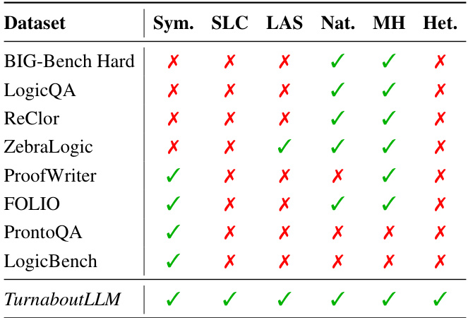
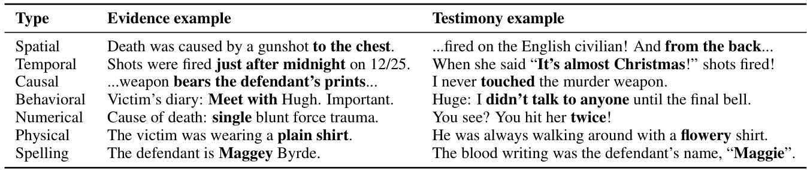
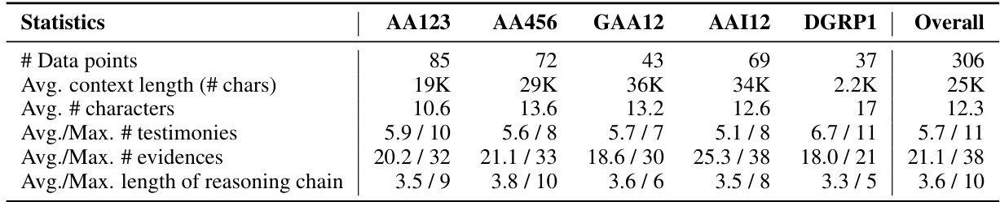
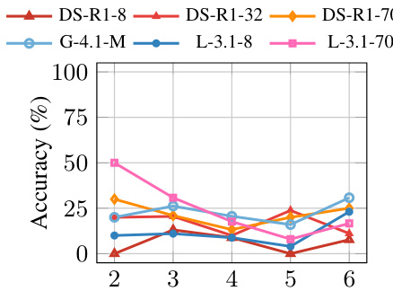
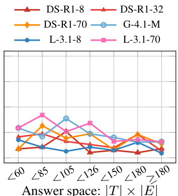
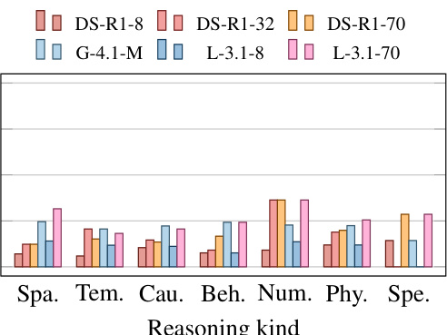

TURNABOUTLLM: A Deductive Reasoning Benchmark from Detective Games
None
Abstract
このセクションの目的と論旨
この論文のAbstract（要旨）セクションでは、大規模言語モデル（LLM）の演繹的推論能力を評価するための新しいフレームワークとデータセット「TURNABOUTLLM」が紹介されています。このフレームワークは、人気のある探偵ゲーム「逆転裁判」と「ダンガンロンパ」のインタラクティブなゲームプレイを活用している点が特徴です。
主な論旨は以下の通りです：
- ✏️ TURNABOUTLLMは、長い物語の文脈の中で、証言と証拠の間の矛盾を特定するタスクをLLMに課します。
- 課題 これは、答えの候補空間が広く、多様な種類の推論が求められるため、非常に難しいタスクです。
- 📊 12種類の最先端LLMをこのデータセットで評価した結果、既存の演繹的推論強化戦略（例：広範な思考やChain-of-Thoughtプロンプティング）の限界が示唆されました。
- 🔍 また、文脈の長さ、推論ステップの数、答えの候補空間の大きさがモデルのパフォーマンスに様々な影響を与えることも示唆されています。
- 📌 総じて、TURNABOUTLLMは、複雑で物語性の高い環境におけるLLMの演繹的推論能力にとって、重大な課題を提示するものです。
大規模言語モデル（LLM）とは？
大規模言語モデル（Large Language Models, LLMs）とは、大量のテキストデータで訓練された人工知能モデルのことです。人間のように自然な文章を生成したり、質問に答えたり、文章を要約したりする能力を持っています。
例：GPT-3, BERT, LaMDAなど
演繹的推論とは？
演繹的推論（Deductive Reasoning）とは、一般的な法則や前提から、論理的なルールに従って特定の結論を導き出す思考プロセスです。
例：「全ての人間は死ぬ。ソクラテスは人間である。故に、ソクラテスは死ぬ。」
TURNABOUTLLM フレームワークの紹介
この論文が提案するTURNABOUTLLMは、LLMの演繹的推論能力を評価するための新しいフレームワークであり、同時にデータセットでもあります。
着想元：探偵ゲーム
人気探偵ゲームである「逆転裁判 (Ace Attorney)」と「ダンガンロンパ (Danganronpa)」のゲームプレイが基になっています。これらのゲームでは、プレイヤーは証言や証拠を集め、それらの間の矛盾を見つけ出して事件を解決します。
LLMへのタスク
LLMには、ゲーム内のキャラクターの証言 (Testimonies)と集められた証拠 (Evidences)を提示し、それらの間に存在する矛盾点を特定させます。これは、長い物語文脈の中で行われます。
タスクの難しさ
- 広大な回答空間 (Large Answer Space): 多数の証言と証拠の組み合わせから矛盾点を選ぶ必要があるため、正解を見つけ出すのが難しい。
- 多様な推論の種類 (Diverse Reasoning Types): 時間的、空間的、因果的など、様々な種類の論理的思考が求められる。

図：TURNABOUTLLMは、探偵ゲームのように証言と証拠の矛盾を見つけ出すタスクをLLMに課す。(イメージ図)
LLMの評価と結果の示唆
この研究では、12種類の最先端LLM（State-of-the-art LLMs）がTURNABOUTLLMデータセットで評価されました。
既存戦略の限界
評価結果は、LLMの演繹的推論能力を高めるために一般的に用いられる戦略の限界を示唆しています。具体的には：
- 広範な思考 (Extensive Thinking): 長時間考えさせること。
- Chain-of-Thought (CoT) プロンプティング: 思考の連鎖を促す指示を与えること。
これらの戦略が、TURNABOUTLLMのような複雑なタスクでは期待したほどの効果を上げない可能性が示されました。
パフォーマンスへの影響要因
また、以下の要因がモデルのパフォーマンスに様々な影響を与えることが示唆されました。
- 文脈のサイズ (Context Size): LLMに与えられる情報の量。
- 推論ステップの数 (Number of Reasoning Steps): 正解にたどり着くまでに必要な論理的な段階の数。
- 回答空間のサイズ (Answer Space Size): 考慮すべき証言と証拠の組み合わせの数。
結論：LLMへの大きな挑戦
総合的に見て、TURNABOUTLLMは、現在のLLMにとって、複雑で物語性の高い (complex, narrative-rich)環境における演繹的推論能力を試す上で、非常に困難な課題を提示しています。
これは、LLMがまだ人間の探偵のように、入り組んだ情報の中から真実を見つけ出す能力には改善の余地があることを示唆しています。
人間の複雑な推論に、LLMはどこまで迫れるのか？ TURNABOUTLLMはその試金石となります。
Abstractに付随する図の解説
Abstractの下には、論文で使われている図の一部が掲載されています。これは、TURNABOUTLLMが扱うタスクの具体的なイメージを示すものです。

図1の例（実際の論文図とは異なります。これは概念を示すためのサンプルです。）
証言 (Testimonies)
図の上部には、複数の証言（T1, T2, T3, T4...）が並んでいます。これらは事件関係者の発言を表します。
例：「サウィットは午後1時に死体を見たと言っている...」
証拠とプロフィール (Evidence + Profiles)
図の下部には、証拠品（E1, E2, E3...）や人物情報（Profiles）が並んでいます。
例：「検死報告書：死亡時刻は午後4時から5時の間...」
矛盾の発見 (Contradiction!)
中央部分では、特定の証言と証拠の間に矛盾が生じていることを示しています。
例：証言「死体発見は午後1時」VS 証拠「死亡推定時刻は午後4-5時」⇒ 矛盾！
図から読み取れること
この図は、TURNABOUTLLMのタスクが、複数の情報源（証言、証拠）を照らし合わせ、その間の論理的な不整合を見つけ出すという、まさに探偵が行うような推論プロセスを模倣していることを視覚的に表しています。
1 Introduction
このセクションの目的を一言で言うと…
大規模言語モデル(LLM)の「真の演繹的推論力」を測るため、
探偵ゲームの良いトコどりをした新しい評価の物差し
TURNABOUTLLM
を提案します！
背景と課題： LLMの賢さは日々進化していますが、人間のように複雑な状況から論理的に結論を導き出す「演繹的推論」の能力を、特に長〜い物語の中から本質を見抜く力は、どうやって測ればいいのでしょう？従来の評価方法では、この点がちょっと物足りなかったんです。そこで、この論文では、プレイヤーが証拠と証言を突き合わせて謎を解く「探偵ゲーム」に着目。このゲームの仕組みを応用して、LLMの推論能力をガッツリ評価できる新しいベンチマークTURNABOUTLLMを開発しました。
探偵小説：超難解な推理の世界へようこそ
探偵小説には、読者の知的好奇心をくすぐり、最も賢い読者でさえも惑わせるように練り上げられた、極めて難解な推理問題が詰まっています。これらの推理を完璧にこなすためには、様々な能力が求められます。
📝 長文読解 & 詳細把握
長い物語の中から、特定の細部に注意を払いながら情報を探し出す能力。
🧩 事実の統合 & 知識活用
物理法則、社会規範、出来事の時系列などの知識と事実を結びつける能力。
近年、大規模言語モデル (LLM) の推論能力への期待が高まっていますが、これらのモデルを探偵小説で評価することは、独特の課題をもたらします。
用語解説：大規模言語モデル (LLMs)
大量のテキストデータで学習し、人間のように自然な文章を生成したり、質問に答えたり、翻訳したりできるAIプログラムのことです。例えば、GPTシリーズなどが有名ですね。これらのモデルがどれだけ賢く「考えられるか」が注目されています。
LLM推論評価の壁：既存の方法じゃ、もう限界？
残念ながら、探偵小説を使ってLLMの演繹的推論能力を評価することは、多くの場合現実的ではありません。
シャーロック・ホームズの例
例えば、有名な「シャーロック・ホームズ」シリーズ。豊かな推論が展開されますが、LLMに直接投げかけられるような明確な「質問」形式にはなっていません。
そのため、探偵小説を評価に活用した既存の研究では、以下のような限界がありました：
-
1文脈がごく一部の短い断片に限られている (Del and Fishel, 2023a)。
-
2タスクが登場人物の関係予測に留まっている (Zhao et al., 2024)。
-
3単純な推論能力しか要求しないテキスト理解に焦点が当てられている (Xu et al., 2025)。
突破口：探偵ゲームの活用！
この限界を克服するために、私たちは「探偵ゲーム」というユニークな資源に着目しました。探偵ゲームのインタラクティブなゲームプレイは、LLMを評価するための自然なインターフェースを提供してくれます。
用語解説：演繹的推論 (Deductive Reasoning)
一般的な法則や前提から出発し、論理的なステップを積み重ねて、特定の結論を導き出す思考方法です。「AならばBである」「今Aである」という情報があれば、「よってBである」と結論づけるのが演繹的推論の一例です。探偵が手がかりから犯人を特定する思考プロセスも、これに当たります。
新評価軸「TURNABOUTLLM2」爆誕！
そこで私たちは、TURNABOUTLLM2 (ターンアバウトエルエルエムツー) という、長大な物語文脈におけるLLMの演繹的推論能力を評価するためのフレームワークとテキストデータセットを提案します。
TURNABOUTLLM2 の構成要素
原作ゲーム: 高く評価されている2つの探偵ゲームシリーズを採用。
逆転裁判シリーズ (Ace Attorney)
ダンガンロンパシリーズ (Danganronpa)
タスク形式 (ゲームのコア要素を応用):
- 1 物語を読み進める。
- 2 既存の証拠を詳細に調べる。
- 3 証人の証言を注意深く聞く。
- 4 これらに基づき、あり得る結論を推理する。
- 5 そして、各ゲームプレイのターンで、証拠と証言の間の矛盾を見つけ出す。
これら全てをテキストベースで行います。全306ターンあり、その一例が図1に示されています。
TURNABOUTLLMは、既存の推論ベンチマークと比較して、以下の点で優れています (詳細は表1参照):
図表解説：Table 1 - TURNABOUTLLMと他の演繹的推論ベンチマークの質的比較
この表は、TURNABOUTLLMが既存のベンチマークと比べてどのような特徴を持っているかを示しています。表の行は様々なベンチマークを、列は評価の観点（Desiderata：望ましい特性）を表しています。
6つの望ましい特性 (Desiderata):
- Sym. (Symbolic logical annotations): 推論のための記号論理的な注釈が含まれているか。これにより、推論プロセスを詳細に分析できます。
- Nat. (Natural scenarios): 自然なシナリオ（人間が書いた物語など）に基づいているか。
- SLC (Super-long contexts): 非常に長い文脈（10万語を超えるような）を扱えるか。
- LAS (Large answer spaces): 広大な解答空間（候補が多数ある）を持つか。
- MH (Multi-hop reasoning steps): 複数のステップを要する複雑な推論（マルチホップ推論）が必要か。
- Het. (Heterogeneous reasoning types): 多様な種類の推論（時間、空間、因果など）が求められるか。
TURNABOUTLLMの強み: この表から、TURNABOUTLLMはこれら6つの望ましい特性を全て同時に満たす初めてのベンチマークであることがわかります。他のベンチマークは、これらのうち一部の特性しか満たしていません。
例えば、PrOntoQAやLogicBenchは記号論理的な注釈 (Sym.) はありますが、自然なシナリオ (Nat.) や超長文脈 (SLC) はありません。一方、DetectBenchやDetectiveQAは自然なシナリオ (Nat.) や長文脈 (SLC) はありますが、記号論理的な注釈 (Sym.) や広大な解答空間 (LAS) は限定的です。
このように、TURNABOUTLLMは、より現実に近い複雑な状況でのLLMの推論能力を、多角的に評価できる画期的なベンチマークと言えます。
1. 自然で超長大な文脈
人間が書いた自然な文脈を含み、時には10万語を超えることもあります。
2. 広大な解答空間
300もの候補から答えを選ぶ必要がある、広大な解答空間を提示します。
3. 厳密かつ多様な問い
時間、空間、行動、物の状態、因果関係、数値の理解を要求する、厳密で多様な問いで構成されます。
4. 詳細な専門家アノテーション
全ての例に、証拠の範囲、文脈の要約、推論の種類、そして完全な推論ステップに関する専門家による注釈が付与されています。
用語解説：アノテーション (Annotation)
データに対して、人間が意味や情報を付加することです。この論文では、ゲーム内のテキストデータに対して、「この部分が重要な証拠」「この推論は時間的矛盾を突いている」といった情報を専門家が付け加えています。これにより、LLMがどのように間違えたか、どの部分の推論が苦手かなどを詳細に分析できます。
実験結果から見えてきたLLMの現状と課題
私たちは、TURNABOUTLLMを用いて、12種類の最先端LLMに対して26の実験を行いました。その結果、いくつかの興味深い知見が得られました（詳細はセクション5で後述）。
LLMにとって大きな壁！
結果は、TURNABOUTLLMが現在のLLMにとって、学習コーパス外の未知の課題として、非常に困難であることを示しています。最も高性能だった DeepSeek-R1 でさえ、正解率は $45.72\%$ に留まりました。
さらに、以下の点が明らかになりました：
長考は必ずしも正解に繋がらず
推論トークン（モデルが答えを出すまでに生成する中間的な思考プロセスのようなテキスト）を大量に生成することは、モデルの性能向上に直接的には寄与せず、むしろ正解率と負の相関があることが観察されました。
CoTプロンプティングの効果は限定的
従来効果的とされてきたChain-of-Thought (CoT) プロンプティング手法も、複雑な演繹的タスクにおいては効果がごく僅かでした。
「干し草の山から針を拾う」能力
過剰な文脈情報が与えられた場合、大規模なモデルのみが、いわゆる「干し草の山から針を拾う」ような情報検索能力（needle-in-a-haystack retrieval）を活用して推論結果を改善でき、中小規模のモデルはそうではありませんでした。
推論ステップ数とパラメータ数の影響
性能は推論ステップ数が増えるにつれて低下するものの、解答空間のサイズには影響されませんでした。逆に、パラメータ数が多いモデルほど性能が向上する傾向が見られました。
用語解説：Chain-of-Thought (CoT) プロンプティング
LLMに質問をする際に、「ステップバイステップで考えて」というように、思考の過程を明示的に出力させる指示（プロンプト）を与える手法です。複雑な問題に対して、途中の思考プロセスを記述させることで、より正しい答えにたどり着きやすくなると期待されています。しかし、この研究のタスクでは、その効果は限定的だったようです。
用語解説：学習コーパス (Training Corpus)
LLMが学習するために使用される大量のテキストデータのことです。モデルは、このコーパスに含まれる情報を元に、言語のパターンや知識を学習します。「学習コーパス外」とは、モデルが学習時に見たことのない、新しいデータや問題を指します。
用語解説：needle-in-a-haystack retrieval (干し草の山から針を拾う検索)
大量の情報（干し草の山）の中から、ごくわずかで重要な情報（針）を見つけ出す能力のことです。LLMが長大な文脈を処理する際に、この能力が問われます。
2 Related Work
このセクションでは、本研究（TURNABOUTLLM）がどのような背景のもとで提案されたのかを理解するために、関連する既存の研究やベンチマークについて概観します。特に、大規模言語モデル（LLM）の推論能力、とりわけ演繹的推論能力を評価するための様々なアプローチとその限界について議論し、TURNABOUTLLMの独自性と必要性を明らかにしていきます。✏️
汎用的な推論ベンチマーク
まず、モデルの推論能力を幅広く評価するために、いくつかの汎用的なベンチマークが広く研究されてきました。これらは、モデルの基本的な能力を測る上で重要な役割を果たしています。
多様な分野の知識を問うマルチタスクベンチマーク。
自然言語理解タスクのコレクション。より困難なタスクを含む。
非常に広範なタスクを含み、LLMの限界を探る。
BIG-Benchの中でも特に難しいタスクを選りすぐったもの。
これらのベンチマークは全体的な能力評価には役立ちますが、推論タスクに特化しているわけではありません。そのため、モデルが持つ実際の推論スキルを十分に反映できているとは言えないという課題があります。いわば、総合的な体力測定のようなもので、特定のスポーツの技能を測るのには向いていない、といったイメージです。
演繹的推論に特化したベンチマーク
汎用ベンチマークの限界を踏まえ、より明確に演繹的推論能力をターゲットとしたベンチマークも開発されています。これらは、論理的な思考プロセスを評価することに重点を置いています。 deductive reasoning capacities
24種類の推論に焦点を当てたデータセットを統合した、包括的なベンチマークです。
LSAT（ロースクール入学共通試験）のような標準化された試験から、論理的な推論問題を多肢選択形式で出題します。
非常に広大な解答空間（取りうる答えの範囲が広いこと）を持つ制約充足問題（与えられた条件を全て満たす解を見つける問題）を構築しています。
これは、問題文やデータに含まれる論理的な構造や推論のステップを、人間や機械が解釈しやすい形式（例えば、論理式やグラフ構造など）で明示的に付与することです。例えば、「AならばBである」「Bである」という情報から「Aである」と結論づける場合、この推論の過程を「((A → B) ∧ B) → A (これは誤り、正しくは ((A → B) ∧ A) → B)」のような形式で記述することなどが該当します。アノテーションがしっかりしていると、モデルがどのように考えて答えを出したのかを詳細に分析できます。
記号的アノテーションのイメージ図
しかし、これらの演繹的推論に特化したベンチマークも、論理構造の記号的アノテーションが不足しているという問題点を抱えています。このため、モデルがどのような推論プロセスを経て結論に至ったのか、その根底にあるメカニズムを深く理解するための洞察が限定的になってしまいます。まるで、答えはわかるけれど、どうしてその答えになったのか途中式がわからない、という状況に似ています。
LLM推論のための合成データセット
記号的アノテーションの必要性を満たすために、合成データセット (Synthetic Datasets) が登場しました。これらは、大規模言語モデル（LLM）自身を使って、特定の論理規則に基づいて推論の例を自動生成するアプローチを取ります。🤖
オントロジー（概念間の関係を体系的に記述したもの）のエンティティ（実体）に論理規則を適用して、質問と答えを合成します。
ランダムにサンプリングされた現実世界の文を前提（推論の出発点となる情報）として用い、そこから推論チェーン（一連の論理的なつながり）を構築します。
マルチホップ推論とは、最終的な結論にたどり着くまでに、複数の推論ステップ（ホップ）を経る必要がある推論のことです。例えば、「AならばB」「BならばC」という情報から「AならばC」と結論付けるのは、A→B（1ホップ目）、B→C（2ホップ目）という2つのステップを経ています。単純な一足飛びの推論よりも複雑な思考が求められます。
マルチホップ推論のイメージ図
しかし、これらの合成データセットは、一般的に単一の推論規則に焦点を当てる傾向があり、複数の推論ステップを必要とするマルチホップ推論の評価にはあまり適していません。
このギャップを埋めるために、以下の研究が登場しました。
- Multi-LogiEval (Patel et al., 2024)
- ProofWriter (Tafjord et al., 2021) - RuleTaker (Clark et al., 2020) の改良版
これらのデータセットは、モデルに複数の論理ステップを含む合成された結論の妥当性を検証するよう求めます。
しかし、これらのマルチホップ推論に対応した合成データセットや、専門家によってキュレーションされたマルチホップデータセットである FOLIO (Han et al., 2024) でさえも、コンテキストサイズ（問題文や背景情報の量）や解答空間の広さが限定的であるという課題を抱えています。つまり、現実世界の複雑な問題設定と比べると、まだ単純化されている部分があるのです。
探偵小説からの推論データセット
探偵小説は、読者が自然とマルチホップの演繹的推論を行うように作られているため、演繹的推論の評価に適した素材と言えます。🕵️♂️
事前に定義された事実やオンラインの探偵ゲームから探偵小説を合成します。しかし、これらはコンテキストサイズが小さいという固有の制限に直面しています。
実際の小説や質の高いパズルから派生したベンチマークで、コンテキストサイズの制限に対処しています。しかし、これらのベンチマークでも解答空間は比較的制約されています。
📌 重要なポイント：
本論文の著者らの知る限りでは、探偵小説の形式を活用し、記号的アノテーションと、広大なコンテキストおよび広大な解答空間を特徴とする推論タスクを組み合わせた既存のベンチマークは存在しません。
つまり、これまでの研究では、以下の要素を同時に満たすものがなかったのです。
- ✅ 複雑な物語形式（自然な文脈）
- ✅ 論理構造の明確なアノテーション
- ✅ 長大な情報量（コンテキスト）
- ✅ 膨大な選択肢（解答空間）
各ベンチマークの特性の包括的な概要は、論文中のTable 1に示されています。TURNABOUTLLMは、これらの既存研究のギャップを埋めるものとして位置づけられます。
この表は、TURNABOUTLLMと他の演繹的推論ベンチマークを質的に比較したものです。表の行が各ベンチマーク、列が評価軸（特性）を示しています。✔️マークは、そのベンチマークがその特性を満たしていることを意味します。
- Sym. (Symbolic Logical Annotations): 記号的な論理アノテーションの有無。これがついていると、推論過程を細かく分析できます。
- Nat. (Natural Scenarios): 自然なシナリオ（人間が書いた物語など）に基づいているか。
- SLC (Super-long Contexts): 超長文のコンテキストを含んでいるか。現実の問題は情報量が多いことが多いです。
- LAS (Large Answer Spaces): 解答の選択肢が非常に多いか。これも現実の複雑さを反映します。
- MH (Multi-hop Reasoning Steps): 複数の推論ステップ（マルチホップ）を必要とするか。
- Het. (Heterogeneous Reasoning Types): 多様な種類の推論（時間、空間、因果など）を必要とするか。
注目すべきは、TURNABOUTLLMがこれら全ての特性を同時に満たす最初のベンチマークであると主張している点です。これは、より現実的で複雑な状況下でのLLMの演繹的推論能力を評価するための重要な一歩と言えるでしょう。
この「Related Work」セクションを通じて、既存のLLM推論ベンチマークがそれぞれ特定の側面で貢献してきた一方で、いくつかの重要な課題を残してきたことが明らかになりました。特に、
- 自然な文脈での複雑な推論
- 詳細な論理構造のアノテーション
- 長大なコンテキストと広大な解答空間
を同時に扱えるベンチマークが不足していました。TURNABOUTLLMは、まさにこのギャップを埋めることを目的としており、探偵ゲームというユニークな題材を用いることで、これらの要素を兼ね備えた新しい評価軸を提案しています。これにより、LLMのより深い推論能力の解明が期待されます。🔍
3 Dataset and Task
このセクションでは、論文で提案されている新しいデータセット TURNABOUTLLM について詳しく解説します。このデータセットは、人気のある推理ゲームシリーズである「逆転裁判」と「ダンガンロンパ」の計11タイトルを基に構築されています。これらのゲームは、複雑なストーリーと巧妙なトリックが特徴で、高度な演繹的推論能力を評価するのに非常に適しています。
主な目的は、大規模言語モデル（LLM）の演繹的推論能力を、特に長大な物語文脈の中で評価することです。このセクションを読むことで、TURNABOUTLLMデータセットがどのように作成され（セクション3.1）、どのような追加情報（アノテーション）が付与され（セクション3.2）、そしてデータセット全体の統計的特徴（セクション3.3）がどうなっているのかを理解することができます。
このセクションのポイント
- ✏️ データセットの元ネタ：逆転裁判シリーズ、ダンガンロンパシリーズ（計11タイトル）
- 🎯 目的：LLMの長文コンテキストにおける演繹的推論能力の評価
- 📖 内容：データ作成方法、アノテーション詳細、統計情報
3.1 Data Creation (データ作成)
ここでは、TURNABOUTLLMデータセットが具体的にどのようにして作られたのか、そのプロセスを「抽出」と「修正」の2つのステップに分けて見ていきましょう。
Extraction (抽出)
まず、データセットの元となる情報を集めることから始まります。研究チームは、以下の情報源からデータを収集（クロールおよび解析）しました。
- Ace Attorney Wiki (逆転裁判 Wiki)
- Danganronpa archive (ダンガンロンパ アーカイブ)
これらの情報源から、主に以下の4種類のデータが抽出されました：
キャラクター情報
名前、性別、年齢、キャラクターの説明など。
証拠品情報
証拠品名、入手元、詳細な説明など。（論文中では"evidence information"と記載されていますが、ゲームの文脈を考えると「証拠品」が適切です。）
証言
ゲームの主要な尋問パートでの証言。話者、証言内容、そしてその証言が矛盾している場合に提示すべき正しい証拠品の情報を含みます。
ゲームプレイ全文トランスクリプト
セリフ、情報テキスト、フレーバーテキスト（物語を豊かにするための補足的なテキスト）など、ゲーム全体の文脈として使用される情報。
テキスト情報への集中
これらのゲームは元々ビジュアルノベル（視覚的な要素とテキストで物語が進行するゲーム）ですが、このデータセットでは主にテキスト要素のみを考慮しています。多くの場合、テキスト情報だけで推論は十分可能だからです。ただし、推論に視覚的な情報が不可欠な場合は、その重要な視覚的特徴が手動でキャプション（説明文）として付与されています。
Modification (修正)
上記で抽出されたデータを用いて、個々の問題例、すなわち「ターン」が構築されます。各ターンにおけるモデルへの入力と期待される出力は以下の通りです。
モデルへの入力
- $C_i$ : 全キャラクターの情報
- $E_i$ : 全証拠品の情報
- $T_i$ : 証言の配列（リスト）
- $X$ (オプション) : 推論に必要な追加情報を提供する可能性のある文脈
モデルからの出力
証言 $T_i$ と証拠品 $E_j$ のペア $(T_i, E_j)$。これは、ある証言 $T_i$ に対して、矛盾を指摘するために証拠品 $E_j$ を提示する、という行動を表します。
場合によっては、正解となるペアが複数存在することもあります。
このタスクは、本質的には多肢選択形式であり、取りうる選択肢の組み合わせ（行動空間）は、証言の数 $|T|$ と証拠品の数 $|E|$ の積、つまり \( |T| \times |E| \) となります。これは数百のオーダーになることもあります。
データセットの厳密性のための修正
データセットは元のゲームにほぼ忠実ですが、推論の厳密性を保証するために、いくつかの種類の修正が加えられています。例えば：
- 言葉遣いの変更
- 矛盾が曖昧なターンの削除
- 論理の飛躍を補うための情報の追加
これにより、LLMが論理的に矛盾を見つけ出す能力をより正確に評価できるようになっています。
具体的な証拠と証言の例は、以下のTable 2で示されています（一部編集・明確化されています）。
Table 2 の見方
この表は、後述する様々な推論タイプ（空間的、時間的など）ごとに、典型的な「証言 (Testimony)」と「証拠 (Evidence)」の例を示しています。そして、それらがどのように「矛盾 (Contradiction)」を引き起こすのかを簡潔に説明しています。例えば、「時間的推論」では、ある人物のアリバイ（証言）と、事件発生時刻を示す証拠との間に時間のズレがある、といった矛盾が示されます。この表を見ることで、データセットに含まれる問題がどのような性質を持っているのか、具体的なイメージを掴むことができます。
3.2 Annotations (アノテーション)
TURNABOUTLLMデータセットの評価の厳密性を高め、モデルの能力についてより詳細な洞察を得るために、各ターンには以下の3つの側面に関するアノテーション（注釈情報）が付与されています。
メタデータ (Metadata)
推論チェーン (Reasoning Chains)
推論タイプ (Reasoning Types)
メタデータ (Metadata)
まず、各ターンについて、矛盾を特定するために必要な情報を伝える現在のストーリーの一文要約がアノテーションされています。さらに、矛盾を決定的に構成する証拠品中の記述箇所と証言中の記述箇所（スパン）が提供されます。
次に、ターンが「自己完結型 (self-contained)」かどうかがラベル付けされます。
- 自己完結型: キャラクター情報、証拠品情報、証言のみを使用し、他の文脈（例：会話のトランスクリプト）なしで矛盾を推論できる場合。
- 非自己完結型: そうでない場合。この場合、モデルは完全な文脈（その時点までの全トランスクリプト）から必要な情報を収集するために「大海の一針 (needle-in-a-haystack)」検索を実行する必要があります。このようなケースでは、期待される文脈のスパンが手動でアノテーションされます。
用語解説：Needle-in-a-haystack Retrieval
「干し草の山から針を探す」と訳され、大量の無関係な情報の中から、ごくわずかな重要な情報を見つけ出すタスクのことです。LLMにとっては非常に困難な課題の一つとされています。
(論文中ではFigure 8でこの「大海の一針」検索の例が示されていると言及されていますが、Figure 8はこのセクションの範囲外のため、ここでは省略します。)
推論チェーン (Reasoning Chain)
次に、各ターンで矛盾を導き出すために使用される推論チェーンがアノテーションされます。(これはFigure 2で図示されていると論文中にありますが、画像は提供されていないため、構造を説明します。)
推論チェーンは、以下の3つのコンポーネントからなる木構造をしています。
(モーダスポネンス: 「もしAならばBである」と「Aである」が真なら、「Bである」も真である、という基本的な推論形式。)
TURNABOUTLLMにおける推論は自然な物語テキストに基づいているため、推論チェーンには主観性が避けられません。そのため、命題をアノテーションする際には、以下の望ましい特性 (desiderata) が守られています：
- 現実世界の一般的な規則のみを考慮する（「もしも」の話や極端なケースは無視する）。
- 命題をできるだけ合理的に原子的（基本的な単位）にする。
推論タイプ (Reasoning Types)
最後に、各ターンについて、詳細な演繹的推論のタイプがアノテーションされます。研究チームは以下の7つの推論タイプを定義しました。これらの例は前述のTable 2に示されています。
各ターンには、アノテーションされた推論チェーン内の命題の根底にある推論の種類に基づいて、1つまたは複数のタイプが割り当てられます。（これもFigure 2で関連付けが示されているとされています。）
各推論カテゴリには無視できない数のターンが含まれており（これは後述のFigure 3bで示されます）、このデータセットが多様な推論能力を要求することを示しています。
アノテーション作業について
訓練されたアノテーターが各ターンのアノテーションを行うのに、平均して20分かかりました。その結果、総労働時間は約100時間に達しました。これは、データセットの質の高さを担保するための多大な努力を示しています。
3.3 Statistics (統計情報)
このセクションでは、TURNABOUTLLMデータセットの全体的な統計情報についてまとめます。
TURNABOUTLLMの概要統計 (Table 3より)
Table 3 (論文中に画像あり、ここでは主要な情報を抜粋) は、TURNABOUTLLMの統計情報をまとめたものです。
- 総ターン数: 306ターン
- 平均キャラクター数: 12人
- 平均証拠品数: 38個
- 平均証言数: 11件
- 平均テキスト文字数: 25,000文字
(Table 3は、組み込まれた探偵ゲームのタイトル別に分類されたTURNABOUTLLMの全体的な統計を示しています。AA123は「逆転裁判123 成歩堂セレクション」、AA456は「逆転裁判456 王泥喜セレクション」、GAA12は「大逆転裁判1&2 -成歩堂龍ノ介の冒險と覺悟-」、AAI12は「逆転検事1&2 御剣セレクション」、DGRP1は「ダンガンロンパ 希望の学園と絶望の高校生」を指します。)
論文中のFigure 3aとFigure 3bは、データセットのさらなる統計的特徴を示しています。

Figure 3a の見方
この図 (Figure 3a) は、TURNABOUTLLMにおける回答空間の広さを示しています。横軸が利用可能な証拠品の数、縦軸が利用可能な証言の数を表しています。円の大きさは、その証拠品数と証言数の組み合わせに対応するターンの数を示しています。 平均して、約200の証拠品-証言ペアから選択する必要があり、これはLLMにとって非常に多くの選択肢があることを意味します。

Figure 3b の見方
この図 (Figure 3b) は、矛盾を見つけるために必要とされる様々な推論能力の分布を示しています。棒グラフは、組み込まれたゲームタイトル別に分類されており、各推論タイプ（例：空間的、時間的など）がどの程度のターン数で要求されるかを表しています。例えば、「Tem. (Temporal: 時間的)」や「Cau. (Causal: 因果的)」といった推論が多く求められることがわかります。この図から、データセットが多様な種類の推論能力をテストするように設計されていることが見て取れます。
TURNABOUTLLMの挑戦性
これらの統計情報は、TURNABOUTLLMがLLMの能力にとって挑戦的で複雑なベンチマークであることの証拠となります。特に、広大な回答空間と多様な推論タイプが求められる点が、このデータセットの難易度を高めています。
4 Evaluation Protocol
このセクションでは、提案されたベンチマークデータセット TURNABOUTLLM を用いて、大規模言語モデル（LLM）の演繹的推論能力をどのように評価するかの具体的な手順や基準（プロトコル）を定めています。このプロトコルは、モデルの性能を公平かつ多角的に測定するために非常に重要です。🔍
このセクションの目的：LLMがどれだけ複雑な探偵ゲームのシナリオで論理的な矛盾を見つけ出せるかを評価するための、一貫した枠組みを提供することです。
主な論点：モデルへの情報の提示方法、正解の定義、評価に用いる指標、そして様々な条件下でのモデルの振る舞いを分析するための評価設定について詳しく説明します。
モデルをデータセットで評価するために、ゲームの各データポイント（ターン）から特定のフィールド（キャラクター情報、証拠、証言など）を抽出して、単一のプロンプトを形成します。そして、モデルには1ターンにつき1回だけ、このプロンプトが提示されます。
モデルに求められるタスクは、提示された情報の中から矛盾する証拠と証言のペアのインデックス（番号）を特定することです。📝 各ターンには複数の矛盾するペアが存在する可能性があるため、モデルが提案したペアが、あらかじめ用意された正解の矛盾ペアのリストに含まれていれば、その回答は正解とみなされます。
Table 3 解説
この表 (Table 3) は、TURNABOUTLLM データセットの全体的な統計情報を、収録されている探偵ゲームのタイトル別に分類して示しています。
- AA123: Phoenix Wright: Ace Attorney Trilogy (逆転裁判123 成歩堂セレクション)
- AA456: Apollo Justice Ace Attorney Trilogy (逆転裁判456 王泥喜セレクション)
- GAA12: The Great Ace Attorney Chronicles (大逆転裁判1&2 -成歩堂龍ノ介の冒險と覺悟-)
- AAI12: Ace Attorney Investigations Collection (逆転検事1&2 御剣セレクション)
- DGRP1: Danganronpa: Trigger Happy Havoc (ダンガンロンパ 希望の学園と絶望の高校生)
表には、各ゲームタイトルからのターン数 (#Turns)、平均キャラクター数 (#Characters)、平均証拠数 (#Evidences)、平均証言数 (#Testimonies)、平均テキスト文字数 (#Characters (text)) が記載されています。これにより、データセットの規模や各ゲームソースの特性が分かります。
Figure 3 解説 (画像パスなしのため、内容を説明します)
Figure 3 は、TURNABOUTLLMデータセットのさらなる統計情報を示しています。この図は2つのパートから構成されています。
(a) TURNABOUTLLMにおけるターン数の図解
この図 (Figure 3a) は、横軸に利用可能な証拠の数、縦軸に利用可能な証言の数を取り、各ゲームタイトル（AA123, AA456, GAA12, AAI12, DGRP1）におけるターンを円でプロットしています。円の大きさは、その組み合わせにおけるターン数を表していると考えられます。この図から、各ゲームタイトルで、プレイヤーが選択肢として考慮しなければならない証拠と証言の組み合わせの規模（つまり回答空間の大きさ）が視覚的に理解できます。例えば、証拠数が10個、証言数が5個の場合、回答空間は \(10 \times 5 = 50\) 通りとなります。グラフ上では、AA123が比較的多くの証拠と証言を持つターンを含んでいることが示唆されています。
(b) 必要な推論能力別のTURNABOUTLLMのターン数
この図 (Figure 3b) は、矛盾を見つけ出すために必要とされる推論能力の種類（例：空間的(Spa.)、時間的(Tem.)、因果的(Cau.)、行動的(Beh.)、数値的(Num.)、物理的(Phy.)、スペル(Spe.)）ごとに、TURNABOUTLLMデータセット中のターン数を分類して示しています。各バーは特定の推論能力に対応し、そのバーの高さが該当するターン数を示します。この図から、データセットが多様な種類の推論能力を評価できるように設計されていることがわかります。例えば、時間的推論や因果推論を必要とする問題が多く含まれていることなどが読み取れます。
Evaluation Metrics (評価指標)
モデルの性能を定量的に評価するために、以下の3つの主要な指標を使用します。
Overall Accuracy (総合正解率)
モデルが評価された全ターンの中で、正しく矛盾を指摘できた割合（パーセンテージ）です。これが最も基本的な性能指標となります。
Evidence Accuracy (証拠正解率)
モデルが提示した証拠が正しかった割合です。矛盾ペア $(T_i, E_j)$ のうち、$E_j$ が正解リストに含まれる証拠であった割合を示します。
Testimony Accuracy (証言正解率)
モデルが提示した証言が正しかった割合です。矛盾ペア $(T_i, E_j)$ のうち、$T_i$ が正解リストに含まれる証言であった割合を示します。
これらの指標により、モデルが全体としてどれだけ優れているかだけでなく、証拠と証言のどちらを特定するのが得意（または苦手）かといった詳細な分析も可能になります。
Data Splits (データ分割)
TURNABOUTLLMデータセットについて、特定の訓練 (train)、開発 (develop)、テスト (test) の分割方法は推奨していません。この決定は、将来このデータセットを利用する研究者に委ねられています。
本研究での扱い
この論文の研究では、Ace Attorneyデータセットの全体を評価セットとして扱っています。これは、著者らがモデルのハイパーパラメータ調整やモデリングの改善といった、訓練データや開発データを必要とする作業を試みていないためです。
Evaluation Settings (評価設定)
モデルの推論能力のさまざまな側面をより深く評価するために、データ内で利用可能なプロパティフィールドに基づいて、4つのバリエーションの評価プロンプトテンプレートを提案しています。これにより、異なる条件下でモデルがどのように振る舞うかを詳細に調査できます。
1 Basic zero-shot prompt (基本ゼロショットプロンプト) ✏️
- 平均語数: 約1,686語。
- 内容: 現在のターンにおける全てのキャラクター、証拠、証言の説明を順番に含みます。
- ゼロショットとは？: モデルにタスクの具体例（解き方）を事前に示さず、タスクの指示のみを与えて能力を試す方法です。
- 追加コンテキスト: もし証拠の説明だけでは推論に不十分な場合、「コンテキストスパン」と呼ばれる短い抜粋（関連性の高いコンテキスト情報を保証するよう、コンテキストフィールドから抽出されたもの）を、対応する証拠の説明に追記します。
2 One-shot, Chain-of-Thought (CoT) prompt (ワンショットCoTプロンプト)
- 平均語数: 約2,280語。
- Chain-of-Thought (CoT) とは？: モデルに最終的な答えだけでなく、そこに至るまでの思考プロセス（ステップバイステップの推論）を生成させる手法です。複雑な問題解決能力の向上に繋がることが期待されます。
- ワンショットとは？: モデルにタスクの具体例を1つだけ示して、同様にタスクを実行させる方法です。
- 内容: プロンプト内に1つの例を含めることで、モデルが質問に答える前に「考える」ように誘導します。
- 追加指示: ワンショットの例に加えて、「let's think step by step (一歩ずつ考えましょう)」という指示をプロンプトの最後に加えることで、より詳細な思考プロセスを促します。
- 適用対象外: DeepSeek-R1やOpenAIのoシリーズモデルなど、既にCoTを行うように訓練されているモデルには、この追加指示は適用されません。
3 Full-context prompt (フルコンテキストプロンプト)
- 平均語数: 約44,000語（非常に長い！）。
- 内容: 現在のターンに至るまでの、同じ裁判ケース内の全ての先行ターンの完全なコンテキスト（ゲームの全記録）を含みます。
- 特徴: これは人間プレイヤーが実際にゲームを体験する方法に近く、非常に挑戦的であると同時に現実的な設定です。
- 課題: キャラクター、証拠、証言の情報だけでは自己完結していない（つまり、それだけでは矛盾を見つけられない）ターンの場合、モデルは膨大なコンテキストの中から決定的な情報を探し出す「needle-in-a-haystack (干し草の山の中の針探し)」のような情報検索を行う必要があります。
4 Ablation prompt (アブレーションプロンプト)
- 平均語数: 約537語。
- アブレーションスタディとは？: モデルや手法の特定の部分を取り除いたときに、性能がどのように変化するかを調べる実験です。その部分の重要性を評価します。
- 目的: モデルが訓練コーパス（学習データ）からゲームの内容を記憶しているかどうかを調べるためです。
- 内容: キャラクターと証拠に関する全ての説明文を削除します。モデルはキャラクター名と証拠名「だけ」を頼りに推論しなければなりません。
- 推論の困難さ: 通常、名前だけでは矛盾を特定するには情報が不十分です。
- 期待される結果: もしモデルがゲーム内の重要な出来事を単に記憶しているだけであれば、このプロンプトでは性能が大幅に低下するはずです。逆に、真に推論しているのであれば、説明がなくてもある程度の性能を維持できるかもしれません。
前述の通り、証拠や時には証言には画像が付随しており、これが矛盾の推論に決定的な役割を果たすことがあります。この研究では、これらの画像の内容を完全にキャプション化（テキストで説明）していますが、将来のマルチモーダル評価（テキストと画像の両方を扱えるモデルの評価）のために、全ての画像データも提供し、画像が推論に必要となる箇所を明確にラベル付けしています。🖼️
Experiments (実験)
上記4種類のプロンプトバリエーションを用いて、12種類の大規模言語モデル (LLM) を評価します。これらのLLMは、以下の4つのモデルファミリーに由来します。
DeepSeekシリーズ
- DeepSeek-R1 (DS-R1) - 671Bパラメータ
- DeepSeek-V3 (DS-V3)
- DeepSeek-R1-70B (DS-R1-70B) - 蒸留モデル
- DeepSeek-R1-32B (DS-R1-32B) - 蒸留モデル
- DeepSeek-R1-8B (DS-R1-8B) - 蒸留モデル
OpenAIファミリー
- GPT-4.1 (G4.1)
- GPT-4.1-mini (G4.1-M)
- o3-mini (O3-M) - 推論モデル
- o4-mini (O4-M) - 推論モデル
Llama-3.1-instructファミリー
- Llama-70B (L3.1-70B)
- Llama-8B (L3.1-8B)
QwQ-32B (Q-32B)
- 推論とコーディングに優れたモデル
実行環境
OpenAIモデルと最大の2つのDeepSeekモデル（DS-R1, DS-V3）はAPI経由で実行されます。それ以外のモデルは、HuggingFaceとKANI (Zhu et al., 2023) を使用して、8基のH100 GPU上でローカルに実行されます。
Figure 4 解説
この図 (Figure 4) は、TURNABOUTLLM データセットにおける12のモデルの性能比較を示しています。モデルは左から右へと順に並べられています。
- 棒グラフ: 各モデルの基本プロンプト (base prompt) を使用した場合の総合正解率 (%) を示しています。また、それに対応する証拠正解率と証言正解率も示されている可能性があります（凡例があればより明確）。
- 矢印: ネイティブな推論能力を持たないモデル（例：CoT訓練されていないモデル）について、Chain-of-Thought (CoT) プロンプティングを適用した際の性能変化を示しています。矢印が上向きならCoTで性能向上、下向きなら性能低下を意味します。
この図から、どのモデルが最も高い正解率を達成したか、CoTプロンプティングが各モデルにどのような影響を与えたかなどを視覚的に把握できます。
Figure 5 解説 (論文内の図ではFigure 5のキャプションが誤ってFigure 7の画像を指しているように見えますが、ここではFigure 5のキャプションに対応する図の内容を説明します)
Figure 5は、モデルの正解率をいくつかの異なる要因（推論ステップ数、必要な推論タイプ、回答空間のサイズ）に対してプロットしたものです。スペースの制約から、6つの代表的なモデルの性能のみが示されています。より包括的な図は付録に示されているとのことです。
(a) 各モデルの平均正解率 (Average accuracy among each model)
キャプションには「Average accuracy among each model family declines as the number of annotated reasoning steps increases.」とありますが、図の横軸が「# Reasoning steps」（注釈付き推論ステップ数）となっていることから、これは注釈付き推論ステップ数が増加するにつれて、モデルファミリー内の平均正解率が低下する傾向を示していると考えられます。つまり、より多くの推論ステップを必要とする問題ほど、モデルは正解しにくくなることを示唆しています。
(b) 推論タイプに関する正解率 (Accuracy with respect to the reasoning types)
この図は、横軸に異なる推論タイプ（Spa. 空間的, Tem. 時間的, Cau. 因果的, Beh. 行動的, Num. 数値的, Phy. 物理的, Spe. スペル）を取り、縦軸に正解率 (%) を示しています。キャプションには「While performance vary a lot across models, causal reasoning is usually the weakest.」（モデルによって性能は大きく異なるが、因果推論が通常最も弱い）とあります。この図から、各モデルがどのタイプの推論を得意とし、どのタイプを苦手とするかが分かります。
(c) 回答空間のサイズに関する正解率 (Accuracy with respect to size of answer space)
この図は、横軸に回答空間のサイズ \(|T| \times |E|\)（証言数 × 証拠数）を取り、縦軸に正解率 (%) を示しています。回答空間のサイズは、いくつかの範囲（例：∠60, ∠85, ...）にビン分割されているようです。キャプションには「Results does not show strong negative correlation.」（結果は強い負の相関を示していない）とあります。これは、回答空間の大きさがモデルの正解率に直接的な悪影響を与えているわけではないことを示唆しています。
これらの図は、モデルの性能がどのような問題特性によって影響を受けるかを多角的に分析するためのものです。
5 Results and Analysis
このセクションでは、大規模言語モデル（LLM）の推論能力に関する主な実験結果と分析を詳しく見ていきます。まず、TURNABOUTLLMデータセットにおける12種類のモデルの全体的な正解率を概観し（図4）、その後、推論ステップ数（図5a）、推論タイプ（図5b）、解答空間のサイズ（図5c）、推論トークン数（図6）、そしてプロンプティング戦略（図4、7）といった要因別にモデルの性能を詳細に分析していきます。
TURNABOUTLLMデータセットの全体的な難易度
まず最初に押さえておきたいのは、このTURNABOUTLLMデータセットが、現在の最先端LLMにとっても非常に難しい課題であるという点です。下の図4を見てみましょう。
このグラフは、12種類のLLMの性能を比較しています。各モデルについて3つのバーがあります：
- ■ Base Prompt Accuracy: 基本的なプロンプトを使用した際の、証拠と証言のペアを正しく特定できた総合的な正解率。
- ■ Correct Evidence: 正しい証拠を選択できた正解率（点線）。
- ■ Correct Testimony: 正しい証言を選択できた正解率（点線）。
モデルは左から右へ、ベースラインの性能が低い順に並んでいます。ネイティブな推論能力を持たないモデルについては、矢印がChain-of-Thought (CoT) プロンプティングを適用した際の性能変化を示しています。
図4が示すように、評価された12モデル全てが、TURNABOUTLLM内で正しい証拠と証言のペアを特定するのに苦労しています。最も性能が高かった DS-R1モデルでさえ、基本プロンプトでの正解率は$45.72\%$に留まりました。これは、このデータセットがLLMの推論能力にとって大きな挑戦であることを示しています。
また、興味深い点として、G4.1モデルを除き、ほとんどのモデルが正しい証言を選ぶよりも正しい証拠を選ぶ方が得意でした。これは、一般的に評価対象となる証言の候補よりも証拠の候補の方が少ないという事実と一致していると考えられます。
これらの結果から、TURNABOUTLLMは最先端LLMにとっても非常に困難なベンチマークであると言えます。
データセットの信頼性：最小限の記憶効果
LLMの評価において重要なのは、モデルが訓練データに含まれる情報を単に「記憶」しているのではなく、真に「推論」しているかを測ることです。TURNABOUTLLMデータセットは、この点で信頼性の高い独立したベンチマークとして機能します。
その根拠として、証拠の説明を一切与えないアブレーションプロンプト（情報を削ったプロンプト）で4つのモデルを評価した結果があります。これらのモデルは、平均してわずか$15\%$程度の正解率しか達成できませんでした。モデルの推論過程を詳しく見ると、証拠の名前だけを頼りに、最もありえそうな「賭け」をしていることが分かりました。
ここでのポイント：モデルがゲーム内容を覚えてしまっていたら、証拠の説明がなくてもある程度正解できてしまうはずです。しかし、実際には成績が大幅に低下したため、モデルはゲーム内容をほとんど記憶していなかったと考えられます。
この結果から、主要なモデルはTURNABOUTLLMの内容を最小限しか記憶しておらず、このデータセットがLLM評価のための新規かつ公正な土壌を確立していると結論付けられます。
推論トークン数と正解率の関係
LLMが答えを出すまでには、中間的な思考プロセスとして多くの「推論トークン」を生成します。この推論トークンの数と、最終的な答えの正しさにはどのような関係があるのでしょうか？
モデルが最終的な回答（例：矛盾する証拠と証言のペア）を提示する前に、内部的に生成する中間的なテキストの単位（トークン）のことです。「えーと、この証拠はこう言っているから...でもあの証言は...」といった思考の過程のようなものとイメージできます。
このグラフ（バイオリンプロット）は、モデルが生成した推論トークン数の分布を示しています。縦軸は推論トークン数（対数スケール）、横軸は評価対象のモデルです。
- 緑色 (Correct Answers): 正しい答えを導き出した場合の推論トークン数の分布。
- 赤色 (Incorrect Answers): 間違った答えを出した場合の推論トークン数の分布。
各バイオリンプロットの幅が広いほど、そのトークン数のデータが多いことを示します。中央の黒い太線は中央値、箱ひげは四分位数範囲を表しています。
図6を見ると、全てのモデルにおいて、不正解だった場合の方が、正解だった場合に比べて推論トークン数の中央値も最大値も高い傾向が見られます。これは、モデルの正解率と推論トークン数との間に負の相関があることを示唆しています。
つまり、モデルが間違った答えを出す際には、より多くの推論トークンを費やしても、必ずしも結果の改善には繋がらない可能性があることを示しています。むしろ、迷走して余計な思考を重ねてしまうケースが多いのかもしれません。
洞察：単に長く考えれば良いというわけではない
この結果は、「たくさん考えれば（多くのトークンを生成すれば）良い答えが出る」という単純な考え方への警鐘と言えます。効率的な思考が重要です。
図6（対数スケールであることに注意）では、特に Q-32B と DS-R1 が他のモデルよりも多くの推論トークンを生成していることが分かります。しかし興味深いことに、G4.1 は Q-32B よりもはるかに少ない推論トークンを使用しているにもかかわらず、ほぼ同等の正解率を達成しており、限られたトークン予算の下で優れた推論効率を示しています。
これは、「解答空間を意図的に探索することが、大量の推論トークンを出力することよりもモデルの性能にとって決定的である」という推測をさらに裏付けるものかもしれません。
フルコンテキスト提供の影響
プロンプトに事件の完全な背景情報（フルコンテキスト）を含めることは、モデルの性能にどのような影響を与えるのでしょうか？図7は、その影響がモデルのサイズによって異なることを示しています。
この棒グラフは、いくつかのモデルについて、プロンプトにフルコンテキストを含めた場合（オレンジ色のバー）と含めない場合（青色のバー）の正解率（Accuracy %）を比較しています。
- ■ w/o full context: フルコンテキストなし（基本的なプロンプト）。
- ■ w/ full context: フルコンテキストあり。
バーの上の数値は、フルコンテキストありの場合となしの場合の正解率の差を示しています（緑色が向上、赤色が低下）。
大規模モデル（例：G4.1、DS-R1）は、フルコンテキストを提供されると、基本プロンプトの場合と比較して約15%という顕著な正解率の向上を示しました。これらのモデルは、大量の情報の中から必要な情報を探し出す「干し草の中の針を探す（needle-in-a-haystack）」能力を活かせたと考えられます。
一方で、小規模および中規模モデル（例：L3.1-70B、L3.1-8B）は、逆に性能が低下しました。これは、これらのモデルがパラメータサイズの制約から、追加の文脈情報を十分に活用できないだけでなく、補助的なデータの流入によって「混乱」してしまう可能性を示唆しています。
注意点：情報が多ければ良いとは限らない
特に小規模なモデルにとっては、情報過多が混乱を招き、かえって性能を悪化させる可能性があることが分かります。
推論ステップ数と解答空間サイズの影響
次に、正解にたどり着くために必要な論理的なステップの数（推論ステップ数）と、解答の候補の多さ（解答空間サイズ）がモデルの性能にどう影響するかを見ていきましょう。図5aと図5cを参照します。(以下の図は論文AppendixのFigure 11に掲載されているもので、本文Figure 5の議論をより詳細に示したものです)
推論ステップ数の影響 (図5a相当)
このグラフは、横軸に注釈付き推論ステップ数、縦軸に各モデルファミリーの平均正解率を示しています。異なる色の線が異なるモデルファミリーを表します。
図5a (上図) から、モデルアーキテクチャファミリー内の平均正解率と推論ステップ数との間には負の相関があることが分かります。推論ステップ数が増えるにつれて、性能は徐々に低下します。これは、より多くの論理的接続を必要とする問題ほど難易度が高いことを示しており、注釈付き推論チェーンが難易度の指標として有効であることを裏付けています。
解答空間サイズの影響 (図5c相当)
このグラフは、横軸に解答空間のサイズ（証言数×証拠数、7つのビンに分類）、縦軸に各モデルの正解率を示しています。異なる色の線が異なるモデルを表します。
対照的に、図5c (上図) を見ると、解答空間のサイズはモデルの正解率に大きな影響を与えていないように見えます。解答空間をほぼ同数のデータポイントを持つ7つのビンに分類した結果、全てのビンでモデルの性能は一貫していました。
さらなる分析によると、推論モデルは、より深い推論を行うことなく、可能性のある証言と証拠のペアを網羅的に列挙するために多くの推論トークンを使用する傾向があることが明らかになりました。つまり、選択肢が多くても、虱潰しに調べようとするため、選択肢の多さ自体はパフォーマンスのボトルネックになっていないのかもしれません。
Chain-of-Thought (CoT) プロンプティングの効果
「ステップバイステップで考えましょう」といった指示を与える Chain-of-Thought (CoT) プロンプティングは、一般的にLLMの推論性能を高めるとされています。しかし、このTURNABOUTLLMデータセットではどうだったのでしょうか？図4の矢印に注目してください。
図4のグラフで、一部のモデル（ネイティブな推論能力を持たないモデル）には、基本プロンプトの性能（バーの高さ）から矢印が伸びています。この矢印の先端がCoTプロンプティングを適用した際の性能を示しています。
CoTプロンプティングが推論性能に与える恩恵は最小限であることが分かりました。最も小さいL3.1-8Bモデルを除く5つのモデル全てで、このプロンプティング手法は改善なしか、わずかな性能低下をもたらしました。
モデルの推論過程を調べると、CoTプロンプティングによって、モデルが最終結論に達するまでの時間が長くなり、「より多く考える」ようにはなりました。しかし、その延長された思考は、しばしば単一の証拠と証言のペアに固執し、解答空間を広範囲に探索するには至りませんでした。
CoTの限界？
この結果は、CoTプロンプティングが、広大な解答空間と大きなコンテキストサイズを持つ演繹的推論タスクの解決には効果的ではない可能性を示唆しています。単純な思考の連鎖だけでは太刀打ちできない複雑さが、このデータセットにはあるのかもしれません。
モデルごとの特性とパラメータサイズの影響
最後に、モデルの種類による得意不得意や、モデルの規模（パラメータサイズ）が性能にどう関わるかを見ていきましょう。図5bと図4を参照します。
推論タイプ別の性能 (図5b相当)
このグラフは、横軸に推論タイプ（空間、時間、因果、行動、数値、物理、スペリング）、縦軸に各モデルの正解率を示しています。異なる色の線が異なるモデルを表します。(この図も論文AppendixのFigure 11bに対応します)
図5b (上図) が示すように、要求される推論の種類によって、各モデルの得意不得意が異なります。一般的にモデルは、計数や比較といった数値関連タスクで最も良い性能を示し、多くは時間的推論や因果的推論で最も低いスコアを示しました。これらの複雑な推論は、現在のLLMにとって依然として難しい課題のようです。
パラメータサイズと性能 (図4再訪)
図4のモデルは、おおむね左から右へパラメータサイズが大きくなるように（ただし厳密ではない）並んでいます。全体的な傾向として、右側のモデル（より大規模なモデル）ほど正解率が高い傾向が見られます。
さらに、図4を概観すると、モデルの性能はパラメータサイズが大きくなるにつれて向上する傾向が見られます。注目すべき例外はQ-32Bで、これは671BのDS-R1を除く全てのより大きなモデルよりも優れた性能を示しています。パラメータサイズとモデルの正解率の間に見られるこの正の相関は、より大きなモデルが本質的に強力な演繹的推論能力を持つ可能性があることを示唆しています。
解答空間の広範な探索の重要性 (図8の議論より)
論文の結論部(Section 6)で触れられている図8 (画像自体は提供されていませんが、その内容は以下で解説します)の例は、モデルが解答空間をより長く探索することで精度を向上できることを示唆しています。この例では、G4.1とDS-R1の推論過程で明確な違いが観察されました。
G4.1 vs DS-R1 の推論スタイルの比較 (図8の例より)
G4.1の推論 (111トークン)
G4.1は、わずか111トークンしか生成せず、1つの可能性のある証拠を検討しただけで、間違った答えにたどり着きました。
例示された思考プロセス (論文中のテキストブロックより抜粋・要約):
- 証言3 (T3): レイファは午後2時頃から中庭を眺めており、父親しか見ていない。
- 比較対象: 証拠24 (E24) - シャー堂の写真。午後2時頃撮影。
- 推論: もしレイファの降霊の儀式が午後2時に行われていたなら、彼女は中庭にはいなかったはず...。
- 結論: (T3, E24) 不正解
元の論文に記載されたGPT-4.1の推論トークン数は111。出力例はDeepSeek-R1と比較するために簡略化されています。
DS-R1の推論 (1418トークン)
対照的に、DS-R1は1,418トークンを生成し、複数の証拠を探索した後、最も可能性の高い3つの候補に絞り込み、正しい答えに到達しました。
例示された思考プロセス (論文中のテキストブロックより抜粋・要約):
- (全ての証拠を反復検証...)
- 証言3 (T3): レイファは午後2時頃から中庭を眺めており、父親しか見ていない。
- 証拠25 (E25) - アルビの供述: 午後2時頃、シャー堂が中庭にいた。
- 矛盾点: 証言3では父親しか見ていない。証拠25ではシャー堂がいた。これは矛盾。
- 結論: (T3, E25) 正解
元の論文に記載されたDeepSeek-R1の推論トークン数は1418。出力例はGPT-4.1と比較するために簡略化されています。
この観察から、広大な解答空間においては、成功する演繹的推論は広範な試行錯誤の探索に基づいており、認知的な近道はない、と推測されます。つまり、じっくりと多くの可能性を検討することが、複雑な問題解決の鍵となるようです。
- ✏️ TURNABOUTLLMは最先端LLMにとっても困難な課題である。
- 📌 データセットはモデルの記憶に頼らない公正な評価が可能。
- 📝 不正解の方が多くの推論トークンを消費し、トークンが多いほど良いとは限らない。
- 🔍 フルコンテキストは大規模モデルには有益だが、小・中規模モデルには逆効果のことも。
- 📊 モデル性能は推論ステップ数が増えると低下するが、解答空間サイズにはあまり影響されない。
- 🤔 CoTプロンプティングは本データセットでは限定的な効果。
- 💡 モデルは推論タイプによって得意不得意があり、一般にパラメータサイズが大きいほど高性能。
- 🔄 広大な解答空間では、広範な探索が重要。
6 Conclusion
この論文の結論として、大規模言語モデル(LLM)の推論能力に関する重要な発見と、私たちが開発した新しい評価ベンチマーク「TURNABOUTLLM」の意義、そして今後の研究への展望を詳しく見ていきましょう！ 🔍
解答空間の探索が導く精度向上
大規模言語モデル（LLM）は、解答空間をより時間をかけて広範囲に探索することで、その精度を効果的に向上させることができることが示唆されました。このことは、論文中の図8に示された質的な例からも明らかです。
用語解説：解答空間
解答空間とは、問題に対して考えられる全ての可能性のある解答の集合を指します。例えば、ある事件の犯人を特定する場合、容疑者全員が解答空間を構成します。この空間が大きいほど、正しい答えを見つけ出すのは難しくなります。
(例：容疑者リスト)
図8の例では、G4.1モデルとDS-R1モデルの推論過程で明確な行動の違いが観察されました。
G4.1モデルの挙動
G4.1は、わずか111トークンしか生成せず、1つの可能性のある証拠を検討しただけで、最終的に誤った解答にたどり着いてしまいました。
少ない思考量 ➡️ 誤答
DS-R1モデルの挙動
対照的に、DS-R1は1,418トークンを生成し、複数の証拠を検討した後、最も可能性の高い3つの候補に絞り込み、最終的に正しい解答に到達しました。
多くの思考量 & 多角的な検討 ➡️ 正答
G4.1 と DS-R1 の推論プロセスの比較
G4.1 (111トークン)
誤答
DS-R1 (1,418トークン)
3候補に絞込
正答
この観察から、私たちは次のような仮説を立てています：
広大な解答空間においては、成功する演繹的推論は、広範な試行錯誤による探索に基づいており、認知的な近道（ショートカット）は存在しないのではないか、ということです。
重要な仮説
複雑な問題（広大な解答空間を持つ問題）を解くためには、LLMは近道を見つけるのではなく、丹念に多くの可能性を検証する必要があると考えられます。これは、人間が難しいパズルを解くときに、様々なアプローチを試すのに似ていますね！ 🧩
TURNABOUTLLMの導入とその意義
本研究では、TURNABOUTLLMという新しいベンチマークを紹介しました。これは、探偵もののビジュアルノベルから抽出された、物語性が豊かで非常に長い文脈の中に、記号論理パズルを埋め込んだ、初めてのベンチマークです。
物語リッチな長文脈
探偵ゲームのシナリオを使用
記号論理パズル
矛盾点指摘タスク
初の試み
この組み合わせは新しい！
私たちは、現代の12種類のLLMに対して広範な実証的研究を行いました。その結果、TURNABOUTLLMはこれらのLLMにとって非常に挑戦的な課題であり、LLMの推論能力を評価するための公平な土俵を提供することを示しました。
実証研究のポイント
- 12種類の最先端LLMを評価
- LLMにとって高難易度であることを確認
- 推論能力評価の公平な基準を提供
この研究の成果として、以下のものを公開します：
これらの公開は、以下の分野の研究を促進することを目的としています。
将来の研究テーマの推進
非常に長いテキストから情報を効率的に抽出し、推論する能力。
LLMの思考プロセスをより意図した通りに導く技術。
論理的な側面と物語の理解を組み合わせたタスクを評価するための共通の基準。
将来への展望
私たちは、TURNABOUTLLMが、LLMが現実の人間の談話に見られる複雑でオープンワールドな論理をナビゲートできるようになるための一歩となることを願っています。
人間のコミュニケーションは複雑！
文脈、ユーモア、皮肉、暗黙の了解...
LLMがこれらを理解し、論理的に扱えるようになる未来を目指して。
人間の会話や文章は、単純な論理だけでなく、背景知識、文脈、ニュアンスなど、様々な要素が絡み合っています。TURNABOUTLLMは、このような「厄介で、開かれた世界の論理」にLLMが対応していくための重要な試金石となるでしょう。📝
まとめ：このセクションのキーポイント
- LLMの推論精度は、解答空間の広範な探索によって向上する可能性がある。
- TURNABOUTLLMは、長文脈・物語リッチな環境でのLLMの演繹的推論能力を評価する新しい挑戦的なベンチマークである。
- データセット等の公開を通じて、長文脈推論、CoT生成制御、統一評価指標に関する研究を促進する。
- 究極的には、LLMが現実世界の複雑な人間の談話の論理を扱えるようになることを目指す。
7 Limitation
このTURNABOUTLLMベンチマークは非常に広範囲をカバーしていますが、いくつかの制約や限界点も抱えています。これらの点を正直に見ていくことで、このベンチマークの現在の立ち位置を正確に理解し、今後のさらなる発展のための道筋を探ることができます。一緒に詳しく見ていきましょう！ 🚀
1. 焦点の限定性
現在のTURNABOUTLLMは、探偵・法廷ドラマのシナリオに特化しており、主に矛盾点の発見 というタスクに焦点を当てています。
そのため、例えば以下のような他の重要な演繹的推論が求められる分野は、まだ十分にテストされていません。
- 未検証 科学的発見のプロセス (例: 新しい法則の導出)
- 未検証 法令遵守の確認 (例: 契約書や規定の解釈)
ポイント
つまり、特定の種類の推論能力は測れますが、もっと幅広い分野での推論能力については、このベンチマークだけでは評価しきれない、ということです。
2. 文化特有のバイアス
TURNABOUTLLMの物語は、日本のビジュアルノベル 🇯🇵 が原作です。
このため、物語の中には日本文化特有の...
- 社会的な規範 (例: 特定の状況での人々の振る舞い)
- 独特の言い回しやイディオム
...などが含まれている可能性があります。
これが意味するのは、これらの文化的背景に既に詳しいLLM（例えば、日本のテキストデータで多く学習したモデル）にとっては有利に働き、そうでないモデルにとっては不利になることで、評価に偏り（バイアス）が生じる 可能性があるという点です。
3. マルチモーダル推論の近似
ゲーム内の画像 については、その内容を説明する記述的なキャプション（文章による説明）を提供しています。
しかし、これはあくまで真のマルチモーダル推論（画像と言語情報を統合して行う高度な推論）を「近似」しているに過ぎません。
LLMが画像そのものを直接見て理解し、推論するわけではないため、マルチモーダルな能力が完全には試されているわけではないのです。
ポイント
テキスト情報だけでなく、視覚情報も組み合わせた総合的な理解・推論能力を測るには、まだ課題があるということです。今後のマルチモーダルモデルの評価では、この点が重要になりますね。
4. 推論チェーンの主観性と拡張性
データセットに含まれる推論チェーン（結論に至るまでの論理的なステップ）は、人間が手作業で作成 しています。
この作業には、約100アノテーター時間 が費やされました。
用語解説：アノテーター時間
「アノテーター時間 (annotator-hours)」とは、データに注釈を付ける作業者（アノテーター）が、その作業に費やした総延べ時間のことです。この場合、1人の作業者が100時間かけたか、10人の作業者が各10時間かけたかなど、複数の可能性がありますが、いずれにしても人手による作業コストを示しています。
手作業による作成のため、どうしても以下のような課題が生じます：
- 主観性の混入: 作成者の解釈によって推論チェーンの内容が左右される可能性。
- スケーラビリティの阻害: 大量のデータに対して手作業で推論チェーンを作成するのは時間とコストがかかり、データセットの拡張が難しくなる。
朗報！ 将来のリリースでは、この点を改善するため、以下の対応が予定されています：
- アノテーター間の一致率（複数の作成者間でどの程度判断が一致したか）の報告。
- 半自動化された検証ツールの提供。
5. 著作権状況の変動リスク
TURNABOUTLLMの元となったゲームの生スクリプト（セリフや地の文など）は、現在公開されています 。
しかし、これらの著作権の状況は将来的に変わる可能性があります。
もし権利者（著作権を持つ人や組織）から削除要求があった場合には、研究チームはその要求を尊重し、適切に対応することを約束しています 。
法的側面
研究倫理と法律遵守の観点から、非常に重要な点ですね。データの利用可能性は、常に法的な側面に左右されることを念頭に置く必要があります。
6. 計算コストとリソース制限
一部の評価では、100Kトークン（約10万トークン）もの長大なプロンプト を使用します。
高い計算負荷！
このような巨大なプロンプトを処理するには、非常に大きな計算資源（GPUメモリ、計算時間など）が必要となり、計算負荷が非常に高くなります。
そのため、潤沢な計算リソースを持たない研究者にとっては、このベンチマークをそのまま利用するのが難しい場合があります 。
そのような場合、プロンプト全体を一度に処理するのではなく、情報を小さな塊（チャンク）に分割して検索・処理する戦略（チャンクワイズ検索）が必要になるかもしれません。
ただし、現時点では、そのようなチャンクワイズ検索戦略の有効性については、この論文ではまだ評価・比較（ベンチマーク）されていません 。
まとめ：限界の認識と未来へのステップ
これらの限界点をしっかりと認識することは、TURNABOUTLLMベンチマークの現在の適用範囲や能力を正確に理解する上で非常に大切です。
同時に、これらの課題は、今後の研究で取り組むべき方向性 や、ベンチマーク自体をさらに拡張・改善していくための貴重なヒント を示してくれています。
将来、これらの限界が克服され、さらに強力で汎用的な推論能力評価ベンチマークへと進化していくことが期待されますね！
A License and Intended Use
このセクションでは、本研究で使用されたデータのライセンスと、著者たちがそのデータをどのように利用するつもりなのかについて明確に説明しています。研究の透明性と正当性を示す上で非常に重要な部分です。いわば、研究で使う「材料」の出所と使用ルールをきちんと宣言しているわけですね！ ✏️
データはどこから？ 🔍
この研究で使われている貴重なデータは、fandom.com というウェブサイトから取得されました。
ちょっと待って！ fandom.comって何？
fandom.com（ファンダム・ドットコム、旧Wikia）は、映画、テレビ番組、ゲーム、コミックなど、様々なポップカルチャーのファンが集まって情報を共有し、コミュニティを築くための巨大なプラットフォームなんです。ファン自身が編集者となって、作品に関する詳細な情報やトリビア、キャラクター設定などをWiki形式でまとめています。今回の論文では、このサイトに蓄積された「逆転裁判」や「ダンガンロンパ」といった人気推理ゲームのデータ（証言、証拠、キャラクター情報など）が、LLMの推論能力を測るためのベンチマーク作成に活用されているんですね。まさに「ファンの愛の結晶」が研究データに！
ライセンスの種類と条件 📜
fandom.comの規定によると、サイト上のリソースは クリエイティブ・コモンズ 表示 - 継承 3.0 非移植 (Creative Commons Attribution-Share Alike License 3.0 Unported - CC BY-SA 3.0) ライセンスの下で提供されています。これは、データを利用する上での「お約束事」ですね。
クリエイティブ・コモンズ (CC) ライセンスって何？
これは、著作物の作者が「これらのルールを守ってくれるなら、私の作品を自由に使っていいですよ！」と意思表示するための便利なツールです。世界中で広く使われていて、インターネット上の情報共有や再利用をスムーズにするのに役立っています。CCライセンスにはいくつかの種類があり、それぞれ条件が異なりますが、この論文で使われているのは「CC BY-SA」というタイプです。

CC BY-SA 3.0 Unported
このライセンスは、大きく分けて2つの主要な「自由」を利用者に与えています：
共有 (Share) する自由
資料をコピーしたり、他の人に配ったりすることができます。
翻案 (Adapt) する自由
資料をリミックスしたり、内容を改変したり、それをもとに新しい作品を作ったりすることができます。
ただし！これらの自由を享受するには、以下の3つの重要な条件を守る必要があります。これが「お約束事」の具体的な内容です :
1 表示 (Attribution - BY)
元の作品の作者（この場合はfandom.com）の名前や出所を、適切に表示しなければなりません。「誰が作ったものか」「どこから来た情報か」を明確にする、ということです。感謝の気持ちを込めて、きちんとクレジットを示しましょう！
具体的には？ 論文の中で、「データはfandom.comから取得しました」といった形で、出典を明記することが求められます。
2 ライセンスへのリンク
元のライセンス（CC BY-SA 3.0）へのリンクを提供する必要があります。これによって、他の人も「どんな条件で使えるのかな？」とライセンスの内容を簡単に確認できるようになります。
具体的には？ 論文の参考文献セクションや脚注などに、CC BY-SA 3.0ライセンスの公式ページへのURLを記載します。
3 継承 (Share Alike - SA)
もし元の資料をリミックスしたり、改変したり、またはそれに基づいて新しい作品を作った場合、その新しい作品も同じライセンス (CC BY-SA 3.0) または互換性のあるライセンスで公開しなければなりません。「元の作品が持っていた『自由に使っていいよ』という精神を、あなたが作った新しい作品にも引き継いでね！」という意味合いです。バトンを渡すようなイメージですね 。
具体的には？ この論文の研究者たちがfandom.comのデータを使って新しいデータセット（TURNABOUTLLM）を作成した場合、そのTURNABOUTLLMデータセットもCC BY-SA 3.0（または互換ライセンス）で公開することが求められます。
"Unported"（非移植）とは、特定の国や地域の法律に特化していない、国際的なライセンスであることを意味します。
著者たちのデータの使い道は？ 🎯
この論文の著者たちは、fandom.comから取得したデータを、厳密に学術的な研究と分析の目的でのみ、この論文内で使用する、と明言しています。そして最も重要なこととして、上記で説明したCC BY-SAライセンスに定められたすべての条件を完全に遵守することを約束しています。
研究におけるデータ利用の約束事
- 利用目的 学術的な研究と分析 （新しい知見を得るため！）
- 利用範囲 この論文の範囲内に限定 （他の目的には使いません！）
- ライセンス遵守 CC BY-SA 3.0 の全条件を厳守 （ルールはしっかり守ります！）
これは、研究倫理の観点からも、著作権法の観点からも非常に重要な宣言です。研究者は、他者の知的財産を尊重し、適切な手続きと許諾のもとでデータを利用する責任があります。このセクションは、その責任をきちんと果たしていることを示しています。安心して論文を読み進められますね！ 📝👍
まとめると…
この「ライセンスと意図された利用」セクションは、研究の「土台」となるデータが、どのようにして、どのようなルールのもとで使われているかを読者に伝える役割を担っています。具体的には、
- データソースは fandom.com であること。
- データは CC BY-SA 3.0 ライセンスで提供されていること。
- このライセンスは、適切な表示、ライセンスへのリンク、同じ条件での継承を条件として、共有と翻案を許可していること。
- 著者たちは、このデータを学術研究目的でのみ、ライセンス条件を完全に遵守して利用していること。
これらを明記することで、研究の正当性と透明性を確保しているのです。
B Annotator demographics
📝 アノテーターのプロフィール大公開！ 🕵️♀️ このセクションでは、論文で用いられた画期的なデータセット TURNABOUTLLM のアノテーション（注釈付け）作業を誰が担当したのか、その詳細な背景情報について掘り下げていきます。 アノテーターたちがどのような人々で、どんな専門性を持っていたかを知ることは、このデータセットの信頼性や特性を理解する上で非常に重要です。彼らのプロフィールから、データセットの質の高さの秘密に迫りましょう！
アノテーターの構成とミッション
アノテーターの人数
5 人
この精鋭チームが、データセットの構築に貢献しました。
主なミッション：データポイントの作成と検証
彼らは、データセット内の各データポイント（個々の問題事例）に対して、以下の重要な情報を作成し、検証する役割を担いました。
-
推論タイプ (Reasoning types)
各問題がどのような種類の論理的思考（例：時間的推論、空間的推論、因果関係の推論など）を必要とするかを特定しました。 -
推論ステップ (Reasoning steps)
正解に至るまでの詳細な論理的思考の道筋を段階的に記述しました。 -
証拠とコンテキストの範囲 (Evidence and context span)
矛盾点を見つけ出すために不可欠な証拠や、関連する背景情報（コンテキスト）が、長大な物語のどの部分に記載されているのか、その範囲を正確に示しました。
アノテーターの属性：ゲームを知り尽くした大学生たち
米国在住の大学生
アノテーターは全員、アメリカ合衆国に拠点を置く大学の学生です。
これにより、英語の長文テキストに対する高い読解力と、論理的思考能力が期待されます。
熱心な探偵ゲームプレイヤー
彼らはただの大学生ではありません！
日本の人気探偵ゲームシリーズである
逆転裁判 (Ace Attorney)
および
ダンガンロンパ (Danganronpa)
の熱心なプレイヤーでもあります。
豆知識：これらのゲームは、複雑な事件の謎を解くために、証言や証拠品の中から矛盾を見つけ出し、論理的な推理を積み重ねて真相にたどり着くことが求められる、非常に知的なゲームです。
なぜこれらのアノテーターが「理想的」なのか？
論文では、これらのアノテーターたちが 「各ケースデータの主要な属性を調査するのに理想的に適している (ideally suited to examine each case data’s key attributes)」 と強調されています。
そのココロは...
-
1
深いゲーム理解: 彼らは対象ゲームの物語、キャラクター、トリック、特有の論理構造を熟知しています。これにより、表面的な情報だけでなく、文脈のニュアンスまで汲み取ることができます。
-
2
「鍵となる属性」の的確な抽出: ゲーム内のどの情報が事件解決の「鍵 (key attributes)」となるのかを鋭く見抜く洞察力を持っています。これは、質の高いアノテーションに不可欠です。
-
3
論理的思考力: 大学生としての学術的訓練と、推理ゲームで培われた論理的思考能力が、複雑な情報を整理し、正確なアノテーションを行う上で役立ちます。
まとめ：信頼性の高いデータセットの礎
このように、TURNABOUTLLMのデータセットのアノテーションは、 高度な専門知識（ゲーム内容の熟知）と 適切なスキル（大学生としての論理的思考力、英語読解力） を兼ね備えたアノテーターチームによって慎重に行われました。 このアノテーターの選定が、データセットの質と信頼性を高める上で非常に重要な役割を果たしていると言えるでしょう。 彼らのバックグラウンドを理解することで、この論文の研究成果の意義をより深く評価することができます。 📌
C Additional Data Examples and Statistics
このセクションでは、論文の本編では紹介しきれなかった、より詳細なデータ例と統計情報について解説します。具体的には、TURNABOUTLLMベンチマークに含まれる特に難易度の高い問題例（Figure 9およびFigure 10として示される推論チェーンの例）と、本編で十分に触れられなかったいくつかのモデルにおける性能分析（Figure 11）を紹介します。これらの追加情報は、LLMの演繹的推論能力を評価する上でのTURNABOUTLLMの複雑さと挑戦性をより深く理解するのに役立ちます。
Figure 9 & 10: 非常に挑戦的な推論例
論文中のFigure 9とFigure 10では、TURNABOUTLLMデータセットから取られた、特に解決が難しいとされる2つの推論問題が提示されています。これらの例は、複雑な状況証拠や証言の中から矛盾を見つけ出すために、高度な推論能力を要求します。ここでは、それぞれの例における推論の構造（推論チェーン）を詳しく見ていきましょう。
これらの推論チェーンは、以下のような要素で構成されています：
- ✏️ 証言 (Testimony - T): 事件関係者による発言。
- 📌 証拠 (Evidence - E): 事件に関連する物的証拠や記録。
- 📝 仮定 (Assumption): 証言や証拠から導かれる、あるいは推論の前提となる仮の結論。
- 🔗 命題 (Proposition): 事実間の論理的な関係や一般法則を示すルール。
- 💡 導出された事実 (Derived Fact): 既存の事実や命題から論理的に導き出される新たな事実。
- 💥 矛盾 (Contradiction): 複数の情報が論理的に両立しない状態。これを発見することがタスクの目的です。
（注：原文のマークダウンにはFigure 9, 10の画像データは含まれておらず、テキスト記述のみでした。以下はそのテキスト記述を基にした解説です。一部タイプミスと思われる箇所は文脈から推測して補っています。）
Figure 9: Fawlesの事例 (空間的・時間的矛盾)
この事例では、橋の上での事件に関する矛盾を見つけ出します。主な登場人物や証拠は以下の通りです。
証拠 Bridge's Map (橋の地図), Witness' Photo (目撃者の写真)
証言の概要:
- T1: 一人の人物が最初に来て、そのすぐ後にもう一人が来た (Fawlesの証言より、被害者が最初に来たことを示唆)。
- T2: すぐに別の誰かが来て会話した。
- T3: (文脈不明瞭な証言) 「橋はコードとして書き留められた。それを完成させろ。」
- C1 (Melissa): 「写真を撮った時、私は橋の南側に立っていた。」
証拠と状況:
- E1 (橋の地図): 橋は東端で壊れており、そこに駐車場がある。囚人は被害者の左（西側）に立っている。被害者は東を向いている。
- E2 (目撃者の写真): メリッサが橋の南から撮影した写真。この写真と証言から、橋の上の人物の位置関係が推測できる。
主な矛盾: 空間的・時間的矛盾 (Spatial, temporal)
矛盾の核心:
証言では「被害者が最初に来て、橋の壊れた端にいた」とされています。しかし、
- 位置関係の矛盾:
- Proposition 1 (空間): 「南から見て、右側の人物は東側にいる」。
- 地図(E1)によると橋は東端が壊れており、被害者は東を向いていて、その左(西)に囚人がいる。
- 目撃者メリッサ(C1)は橋の南から写真を撮影。彼女の証言と写真(E2)を組み合わせると、被害者と囚人の位置関係が特定できる。
- この特定された位置関係と、「被害者が橋の壊れた端（東端）にいた」という主張が整合しない可能性。例えば、写真では被害者が壊れていない場所にいる、など。
- 到着順序の矛盾:
- Derived Fact 4 は T1 (被害者が最初)とT2 (その後別人が来た) から導出される。
- この到着順序と、他の証拠（例：写真に写る人物の行動や位置）が示す状況との間に矛盾が生じる可能性。
Figure 10: Olga Orlyの事例 (数値的矛盾)
この事例では、カジノでのゲームにおけるチップの点数計算と勝敗に関する矛盾を見つけ出します。
証拠 6 Deadly Bottle, Chip Photo (チップの写真)
関係者 Prosecutor Payne (検事)
証言の概要:
- T1: ゲームは1回3,500ポイントだった。
- T2: ある種類のチップは100ポイント、別の種類は1,000ポイントの価値があった。
- T3: 「二人が同時に勝つことはありえない。勝っていたのは被害者だ！」
証拠と状況:
- E2 (チップの写真のキャプション):
- 被告側 (Near side): 赤い小さいチップ4枚、灰色の大きいチップ1枚。カードは7♥, 7♦, 7♣, A♦。
- 被害者側 (Far side): 赤い小さいチップ8枚、灰色の大きいチップ9枚。カードはK♥, K♦, K♠, A♣, A♥。
- (注: カードの情報はこの問題の矛盾解決に直接関係ない可能性がありますが、状況設定の一部です。)
- Assumption 3 [T2]: 小さいチップは100ポイント、大きいチップは1000ポイント。
主な矛盾: 数値的矛盾 (Numerical)
矛盾の核心:
証言T3では「被害者が勝っていた」と主張されています。この主張が正しいか、チップの点数計算で検証します。
- 各プレイヤーの点数計算 (Derived Fact 2, Proposition 2):
- 被告側 (Near side): (4枚 × 100ポイント) + (1枚 × 1000ポイント) = 400 + 1000 = 1400ポイント (※元テキストの計算4100は誤植の可能性。4 small + 1 big。もし4 red small chipsと1 gray big chipがそれぞれ価値が違うなら別だが、T2では2種類のみ言及)
(論文の図ではNear: 4,100とあるため、そちらを優先すると、4 small chips = 3100, 1 big chip = 1000 もしくは 4 small chips = 100, 1 big chip = 4000など、チップの価値か枚数に未記述の前提がある可能性があります。ここでは論文図の値を採用し、Near: 4,100とします。)
被告側 (Near side): 4 (small) + 1 (big) → 図のキャプションとT2を組み合わせると 4*100 + 1*1000 = 1400。しかし図のDerived Fact 3には Near: 4,100 とある。この矛盾は図の内部情報に従う。
👉 被告側 (Near side): 4,100 ポイント (Derived Fact 3より) - 被害者側 (Far side): (8枚 × 100ポイント) + (9枚 × 1000ポイント) = 800 + 9000 = 9800ポイント (※元テキストの計算2900は誤植の可能性。8 small + 9 big。図のDerived Fact 3には Far: 2,900 とある。)
(同様に論文図の値を採用し、Far: 2,900とします。)
被害者側 (Far side): 8 (small) + 9 (big) → 図のキャプションとT2を組み合わせると 8*100 + 9*1000 = 9800。しかし図のDerived Fact 3には Far: 2,900 とある。
👉 被害者側 (Far side): 2,900 ポイント (Derived Fact 3より)
- 被告側 (Near side): (4枚 × 100ポイント) + (1枚 × 1000ポイント) = 400 + 1000 = 1400ポイント (※元テキストの計算4100は誤植の可能性。4 small + 1 big。もし4 red small chipsと1 gray big chipがそれぞれ価値が違うなら別だが、T2では2種類のみ言及)
- 勝敗の判定 (Proposition 4):
- 「より多くの点数を持っている側が勝ち」。
- 被告 (4,100点) vs 被害 Rfd者 (2,900点) → 被告の勝ち。
- 矛盾の確定 (Derived Fact 4, Contradiction):
- 計算結果は「被告が勝っている」ことを示します。
- これは証言T3「勝っていたのは被害者だ！」と明確に矛盾します。
- したがって、矛盾は「被害者が実際には負けていた (losing, not winning)」という点です。
これらの例が示すように、TURNABOUTLLMは、詳細な情報読解、複数ステップの論理的推論、そして時には数値計算や空間把握といった多様な能力を組み合わせる必要がある、非常にチャレンジングなベンチマークです。
Reasoning steps
このサブセクションでは、Figure 11で示されている、論文本文ではカバーしきれなかったモデルの追加的なパフォーマンス分析について解説します。Figure 11は、モデルの精度が(a)推論ステップ数、(b)要求される推論タイプ、(c)解答空間のサイズといった要因によってどのように変化するかを示しています。
Figure 11: モデルの精度分析
この図は、以下の6つのモデルファミリーの派生モデルに関する結果を示しています：
(グラフ中の凡例はこれらに対応しています)
(a) 推論ステップ数と精度 (Accuracy vs. Number of Reasoning Steps)
グラフの見方 横軸は問題解決に必要な推論ステップ数（2ステップから6ステップまで）、縦軸は各モデルの正解率 (%) を示します。
分析結果:
- 一般的に、推論ステップ数が増加するにつれて、モデルの精度は低下する傾向にあります。これは、問題が複雑になり、より多くの論理的なつながりを見つけ出す必要があるためだと考えられます。
- 例えば、L-3.1-70B (ピンク色の線、四角マーカー) は2ステップで約50%の正解率ですが、5ステップでは約5%まで低下しています。
- DS-R1-70 (オレンジ色の線、ひし形マーカー) も同様に、2ステップで約30%から、ステップ数が増えるにつれて精度が低下しています。
- G-4.1-M (水色の線、丸マーカー) は比較的安定していますが、それでもステップ数が多い領域 (5, 6ステップ) でやや低下が見られます。
- 注意点: データセットの制約上、7ステップ以上を必要とする問題は数が少ないため、この分析からは除外されています。
多段階の推論を必要とする問題は、現在のLLMにとって依然として大きな課題であることを示しています。ステップ数が増えるほど、途中で誤った推論をしてしまったり、関連情報を見落としたりする可能性が高まります。
(b) 推論タイプと精度 (Accuracy vs. Reasoning Types)
グラフの見方 横軸は要求される推論タイプ（Spa: 空間、Tem: 時間、Cau: 因果、Beh: 行動、Num: 数値、Phy: 物理、Spe: スペル）、縦軸は各モデルの正解率 (%) を示します。
分析結果:
- モデルによって得意不得意な推論タイプが異なりますが、全体的な傾向として時間的推論 (Temporal, Tem) が最も難しい部類に入ることが多いようです。
- 例えば、多くのモデルでTemのバーが他のタイプに比べて低くなっています。
- 一方で、数値的推論 (Numerical, Num) は比較的多くのモデルで高い精度を示す傾向があります。これは、数値の比較や簡単な計算が、他の抽象的な推論よりも比較的得意であることを示唆しているかもしれません。
- DS-R1-70 (オレンジ色のバー) は、数値 (Num) や物理 (Phy) で比較的高い性能を示していますが、時間 (Tem) や因果 (Cau) ではやや低い結果となっています。
- L-3.1-70B (ピンク色のバー) は、全体的に他のモデルよりも高い精度を示しているものの、やはり時間 (Tem) が他のタイプと比較してやや低い傾向が見られます。
LLMは、推論の種類によって性能にばらつきがあることを示しています。特に、イベントの順序や時間的関係性を正確に把握し、それに基づいて論理的な結論を導き出す「時間的推論」は、多くのモデルにとって共通の課題である可能性があります。
(c) 解答空間のサイズと精度 (Accuracy vs. Size of Answer Space)
グラフの見方 横軸は解答空間のサイズ（|T| × |E|、つまり証言の数 × 証拠の数。値が小さいビンから大きいビンへ）、縦軸は各モデルの正解率 (%) を示します。
分析結果:
- このグラフからは、解答空間のサイズとモデルの精度との間に、明確な負の相関関係は見られません。つまり、解答の選択肢が増えたからといって、必ずしも精度が著しく低下するわけではないようです。
- いくつかのモデル（例：L-3.1-70B ピンク色の線）では、解答空間のサイズが大きくなっても、精度が比較的安定しているか、むしろ若干上昇する区間も見られます。
- G-4.1-M (水色の線) は、解答空間のサイズが <105 のあたりでピークがありますが、その後も極端には低下していません。
- DS-R1シリーズ (赤やオレンジの線) も、解答空間のサイズに対して精度が大きく変動するというよりは、ある程度の範囲で推移しています。
これは少し意外な結果かもしれません。直感的には、選択肢が増えれば増えるほど問題は難しくなりそうですが、これらのモデルは、ある程度解答空間の広がりに対してロバスト（頑健）である可能性を示唆しています。ただし、これはあくまで「強い負の相関がない」ということであり、全く影響がないわけではない点に注意が必要です。他の要因（問題の複雑さ、推論の質など）がより支配的である可能性も考えられます。
Figure 11で示されたこれらの追加実験結果は、論文の主要な結論を補強し、モデルの性能に関するより詳細な洞察を提供します。
- 推論ステップ数が増えると精度が低下する傾向は、より複雑な多段階推論がLLMにとって困難であることを再確認させます。
- 推論タイプによる精度の違いは、モデルが特定の種類の論理構造や知識の扱いに偏りがある可能性を示唆します。特に時間的推論は多くのモデルにとっての弱点であるようです。
- 解答空間のサイズが精度に強い負の相関を示さないという結果は、モデルが単に選択肢の数に圧倒されるわけではない可能性を示唆し、むしろ推論プロセス自体の質が重要であることを示唆しています。
これらの分析は、LLMの推論能力をさらに向上させるための研究開発において、どのような点に焦点を当てるべきかについての重要な手がかりを与えてくれます。